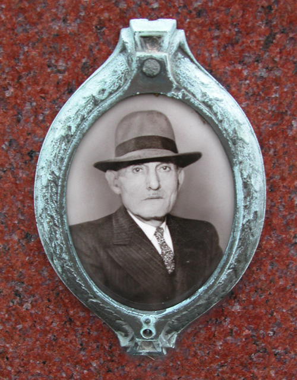

I visited Jewish Waldheim Cemetery in Chicago today to find that my great-grandfather Hyman Victor’s gravestone photo had been stolen, likely sold for scrap metal. A sad conclusion to the story of his life I spent a lot of time reconstructing. As you can see in the background, my grandmother Ethel Malkin and great uncle Sol Kapp’s photos are also missing, along with many others in this section. (That’s my dad Leonard Malkin behind his grandfather’s gravestone in the photo.)
Hyman’s gravestone photo as seen in 2008:

Comments
That’s too bad. Did they take the Cemetery 2.0 thing too?
Got to you via YIVO; enjoyed everything you’ve presented;
a great treasure hunt well worth the effort.
If you post the Yiddish letters I might be able to get you a translation.
At the moment I am in Montevideo cataloguing the lost Yiddish books: about 4000 or so.
Randy